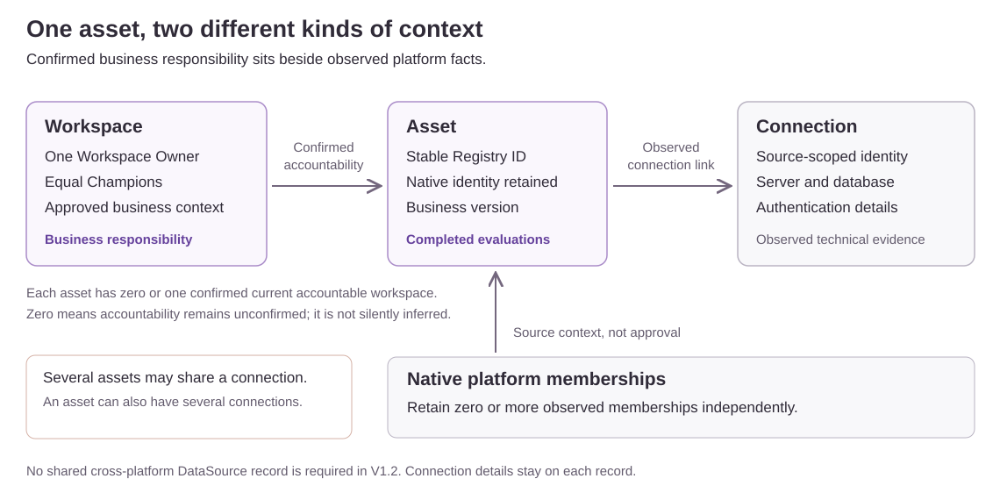
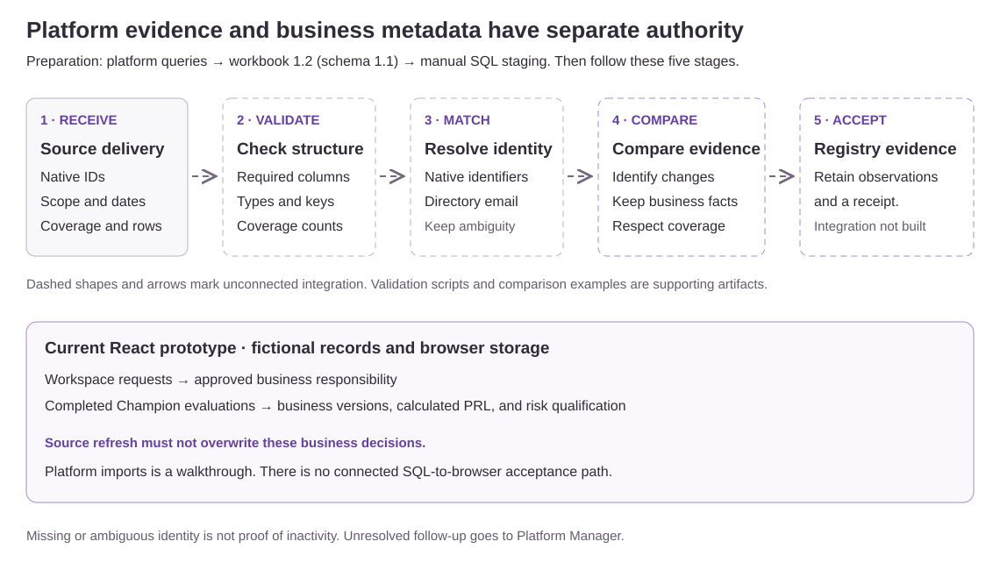

Workspace requests
Declare business responsibility and content. Add technical setup only when needed.
Three form steps for business-only changes; five for technical requests. Decisions and implementation evidence follow submission.
Connect platform evidence with business accountability. Use this guide for the current prototype. The Excel delivery contract remains 1.1.
Platform membership is evidence. The accountable workspace is a confirmed business association. Source refreshes do not overwrite approved business metadata.
Declare business responsibility and content. Add technical setup only when needed.
Three form steps for business-only changes; five for technical requests. Decisions and implementation evidence follow submission.
A current Champion records business context and a completed evaluation.
Four steps. PRL is calculated. No saved evaluation draft, asset approval queue, or asset Annual Attestation.
Follow assigned Reviews, Findings, and workspace Annual Attestation.
Review and annual forms each have three steps. A High risk qualification does not itself create a Review.
Inspect the five-step evidence walkthrough and platform query references.
Receive, Validate, Match, Compare, Accept. Live acceptance is not connected; SQL staging remains a manual handoff.


Start with the implemented workflows and their limits.
Workbook revision 1.2 simplifies guidance. Input schema 1.1 keeps the existing headers, native identities, and queries.
Historical context. Use the current guide when workflow descriptions differ.